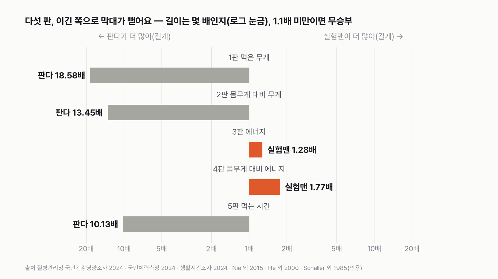
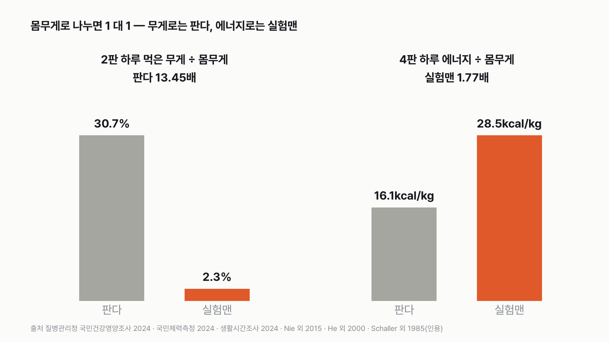
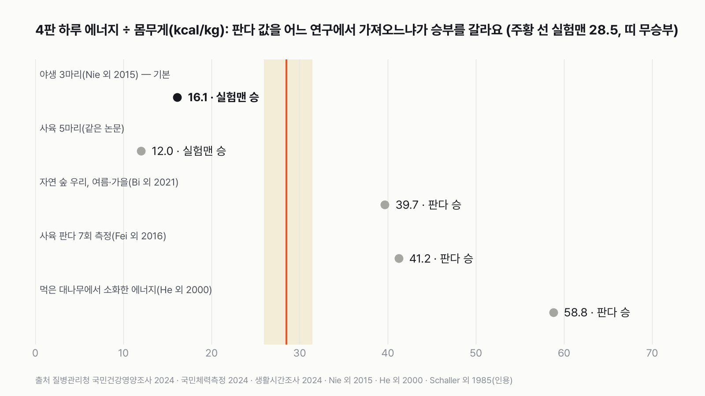

판다 vs 실험맨, 하루에 누가 더 많이 먹을까
무게로 재면 누가 이길지 뻔해 보여요. 그런데 칼로리로 바꿔 재도 승자가 같을까요?
독자 투표
판다 vs 실험맨, 다섯 판 승부로 하루에 '더 많이 먹는' 쪽은?
- 판다는 대나무만 먹고 하루 대부분을 먹으며 보낸다고 알려져 있어요. 평균 한국 성인 '실험맨'이 판다와 '하루에 먹는 양'으로 겨뤄요.
- 겨루는 잣대는 다섯 개예요. 먹은 무게, 몸무게로 나눈 무게, 에너지(칼로리), 몸무게로 나눈 에너지, 먹는 데 쓰는 시간이에요.
- 판다 숫자는 야생 판다를 잰 논문에서, 실험맨 숫자는 국민건강영양조사와 생활시간조사에서 가져왔어요.
조건과 규칙
- 실험맨은 평균 한국 성인이에요. 먹은 무게와 에너지는 질병관리청 국민건강영양조사(2024, 19세 이상), 몸무게는 국민체력측정(2024, 19~64세), 먹는 시간은 국가데이터처(옛 통계청) 생활시간조사(2024, 19세 이상)를 써요.
- 판다는 중국 산속의 야생 판다예요. 하루 먹은 대나무 무게, 몸무게, 하루 에너지, 먹는 시간을 잰 연구를 써요.
- 다섯 판 모두 '더 많이(길게) 먹는 쪽'이 이겨요. 큰 쪽이 작은 쪽의 1.1배 이상이면 승, 안 되면 무승부예요. 승이 많은 쪽이 최종 승자예요.
- 판다 값이 계절이나 대나무 부위에 따라 범위로만 나오면, 범위의 가운데 값을 쓰고 양 끝은 따로 보여 줘요. 이 규칙은 숫자를 보기 전에 정했어요.
결과 요약
다섯 판 판다 3승, 실험맨 2승 → 최종 판다 승
- 무게와 시간으로 재는 세 판(먹은 무게, 몸무게 대비 무게, 먹는 시간)은 판다가 10배 넘는 차이로 이겼어요.
- 판다 에너지를 2015년 연구가 잰 '쓰는 에너지'로 어림하면 실험맨이 이겨요. 실험맨이 먹은 1,912kcal 대 판다가 쓰는 1,493kcal로 1.28배, 몸무게 1kg당으로는 28.5kcal 대 16.1kcal로 1.77배예요.
- 다만 판다 에너지는 연구마다 크게 달라요. 2024년 비교 연구는 높은 쪽 측정이 더 그럴듯하다고 봤고, 그 값이면 판다가 다섯 판을 다 이겨요. 어느 쪽이든 최종 승자는 판다예요.
그래서? 판다는 실험맨보다 대나무를 열 배 넘게 오래, 열 배 넘게 많이 먹어요. 그런데 판다가 하루 쓰는 에너지로 어림하면, 실험맨이 먹는 칼로리보다 적어요. 몸무게로 나눈 두 판은 무게는 판다, 칼로리는 실험맨이라 1 대 1이에요.
독자 예상 vs 데이터 결과
판다 vs 실험맨, 다섯 판 승부로 하루에 '더 많이 먹는' 쪽은?
데이터로 보면 판다. 판다 3승 실험맨 2승으로 판다 승이에요. 먹은 무게(18.58배)·몸무게 대비 무게(13.45배)·먹는 시간(10.13배)은 판다, 에너지(1.28배)·몸무게 대비 에너지(1.77배)는 실험맨이 이겼어요. 판다 에너지는 '쓰는 에너지'로 어림한 값이고, 높은 쪽 연구 값이면 판다가 5판을 다 이겨요.


숫자 두 개로 줄이면 이래요. 판다는 하루 14시간 21분 동안 대나무 28.4kg을 먹어요. 실험맨은 하루 1시간 25분 동안 1.5kg을 먹어요. 그런데 판다가 하루 쓰는 에너지(1,493kcal)로 어림하면, 실험맨이 먹는 1,912kcal보다 적어요.
| 판 | 판다 | 실험맨 | 배수 | 승자 |
|---|---|---|---|---|
| 1판 먹은 무게 | 28.4kg | 1.53kg | 18.58배 | 판다 |
| 2판 몸무게 대비 먹은 무게 | 30.7% | 2.3% | 13.45배 | 판다 |
| 3판 하루 에너지 | 1,493kcal | 1,912kcal | 1.28배 | 실험맨 |
| 4판 몸무게 대비 에너지 | 16.1kcal/kg | 28.5kcal/kg | 1.77배 | 실험맨 |
| 5판 먹는 시간 | 14시간 21분 | 1시간 25분 | 10.13배 | 판다 |
| 최종 | 판다 3승 2패 → 판다 승 |
판마다 큰 값을 작은 값으로 나눠 1.1배 이상이면 승, 안 되면 무승부로 쳤어요. 다섯 판 가운데 무승부는 없었어요. 무게와 시간 쪽은 판다가 10배 넘게, 에너지 쪽은 판다 값을 '쓰는 에너지'로 어림했을 때 실험맨이 1.3~1.8배로 이겼어요.
1판 먹은 무게: 판다 승(18.58배)
중국 쓰촨성 샹링산맥의 야생 판다를 조사한 연구에 따르면, 판다는 대나무 잎과 줄기를 먹는 철에 하루 13.1~14.6kg, 죽순이 나는 철에는 하루 43.7kg을 먹어요. 1년 평균 값은 없어서, 미리 정한 규칙대로 가장 적은 13.1kg과 가장 많은 43.7kg의 가운데인 28.4kg을 썼어요. 실험맨은 하루 밥·반찬·과일·음료·술을 모두 더해 1,528.5g을 먹어요. 맹물은 들어 있지 않아요. 판다가 가장 적게 먹는 철(13.1kg)을 데려와도 8.57배라 판정은 같아요.
2판 몸무게 대비: 판다 승(13.45배)
야생 판다 세 마리의 평균 몸무게는 92.6kg이에요. 대나무 28.4kg은 몸무게의 30.7%예요. 실험맨 몸무게는 67.0kg(남성 75.9kg, 여성 58.1kg의 평균)이고, 하루 1.53kg은 몸무게의 2.3%예요. 실험맨이 판다처럼 먹으려면 하루 20kg 넘게 먹어야 해요. 다른 논문은 판다가 보통 몸무게의 6~15%를 먹는다고 적었어요. 잎·줄기 철 13.1kg으로 계산해도 14.1%라, 판다가 6.20배로 이겨요.
3판 하루 에너지: 실험맨 승(1.28배)
여기서 판이 뒤집혀요. 2015년 학술지 「사이언스」에 실린 연구는 야생 판다 세 마리가 하루 쓰는 에너지를 쟀어요. 평균 6,246kJ, 칼로리로 1,493kcal예요. 몸무게가 그대로인 다 큰 동물은 먹어서 얻는 에너지와 쓰는 에너지가 같다고 보고, 이 값을 판다가 하루 얻는 에너지로 썼어요. 실험맨은 하루 1,911.9kcal를 먹어요. 이렇게 어림하면 실험맨이 1.28배 많아요. 판다는 쓰는 에너지, 실험맨은 먹은 에너지라 같은 것을 잰 값은 아니에요. 이 가정은 숫자를 보기 전에 정했어요. 대나무는 소화가 잘 안 돼서 먹은 에너지 중 상당 부분이 그대로 빠져나가요. 사육 판다 연구에서는 대나무 에너지의 26% 안팎만 소화됐어요.
4판 몸무게 대비 에너지: 실험맨 승(1.77배)
몸무게 1kg당으로 나누면 차이가 더 벌어져요. 같은 어림으로 판다는 16.1kcal, 실험맨은 28.5kcal예요. 이 연구진은 판다가 같은 덩치 포유류에게 기대되는 값의 절반에도 못 미치는 에너지로 산다고 보고했어요. 많이 움직이지 않고, 몸의 일부 장기가 작고, 갑상샘 호르몬이 낮은 것을 까닭으로 들었어요. 대나무를 많이 먹는 대신, 적게 쓰며 사는 동물이라는 얘기예요.


5판 먹는 시간: 판다 승(10.13배)
1985년에 책으로 나온 울롱 자연보호구 야생 판다 현장 조사에서 판다는 하루 13.5~15.2시간을 먹으며 보냈어요. 가운데 값은 14시간 21분이에요. 실험맨이 하루 식사에 쓰는 시간은 1시간 25분이에요. 평일 1시간 23분, 토요일 1시간 30분, 일요일 1시간 29분으로, 주말에도 크게 늘지 않아요. 판다가 가장 짧게 먹는 13.5시간을 데려와도 9.53배예요.
몸무게로 나누면 1 대 1
덤으로 몸무게로 나눈 두 판(2판과 4판)만 보면 1 대 1이에요. 무게로는 판다가 13.45배로 이기고, 에너지로는 실험맨이 1.77배로 이겨요. 판다는 몸무게의 30%가 넘는 대나무를 먹지만, 판다가 쓰는 에너지로 어림하면 몸무게 1kg당 실험맨이 먹는 칼로리의 57%예요. 그래서 '몸무게로 나누면 누가 더 많이 먹나'의 답은 무게로 세는지, 칼로리로 세는지에 따라 달라져요.
판정이 걸려 있는 값: 판다 에너지
판다 하루 에너지는 연구마다 크게 엇갈려요. 같은 2015년 연구의 사육 판다 다섯 마리는 1,095kcal로 더 낮았어요. 그런데 2016년 중국 청두 판다 기지 연구는 사육 판다를 일곱 번 재서(평균 125kg) 하루 평균 5,161kcal를 얻었어요. 2021년 같은 기지 연구는 자연 숲 우리에서 지낸 판다(평균 80kg)에서 하루 3,174kcal를 쟀어요. 이 연구의 '여름' 값에는 여름과 가을에 잰 판다가 함께 들어 있어요. 2024년 곰과 동물 비교 연구는 판다 에너지 측정값이 두 갈래로 나뉜다고 정리했어요. 그리고 사육 판다 소화 실험과 다른 곰 값을 근거로, 높은 쪽이 더 그럴듯하다고 봤어요. 그 값이면 판다가 5판 모두 이겨요.


다른 연구 값을 쓰면 판다가 다섯 판을 다 이겨요
2016년 연구 값을 쓰면 3판은 판다 2.70배, 4판은 판다 1.45배로 판다가 5승이에요. 2021년 숲 우리 여름·가을 값도 3판 1.66배, 4판 1.39배로 판다 5승이에요. 샹링산맥 연구가 먹은 대나무에서 소화한 에너지로 어림한 값(하루 4,116~6,771kcal의 가운데)을 써도 판다 5승이에요. 기본 값인 2015년 야생 판다 값에서 하루 1,738kcal(7,272kJ)를 넘으면 3판이 무승부로, 2,103kcal(8,799kJ)를 넘으면 판다 승으로 바뀌어요. 2015년 연구의 야생 판다 값 오차 범위(±2,174kJ) 안에 이 경계가 들어 있어요. 이 숫자 하나가 다섯 판 승부를 3 대 2로도, 5 대 0으로도 만들어요.
남자 실험맨, 여자 실험맨
실험맨을 남녀로 나누면 결과가 조금 달라져요. 남자 실험맨은 하루 2,211kcal를 먹어 3판을 1.48배로 이겨요. 여자 실험맨은 1,597kcal라 판다 1,493kcal와 1.07배 차이로 3판이 무승부예요. 4판은 여자 실험맨도 1kg당 27.5kcal로 1.70배 이겨요. 그래서 여자 실험맨은 판다 3승 1패 1무, 남자 실험맨은 판다 3승 2패예요. 최종 승자는 둘 다 판다예요.
덤: 판다가 먹은 대나무는 실험맨 몸무게의 42%
판다가 하루 먹는 대나무 28.4kg은 실험맨 몸무게 67kg의 42%예요. 죽순 철 43.7kg이면 65%예요. 실험맨이 판다처럼 몸무게의 30.7%를 먹으려면 하루 20.6kg, 세 끼로 나누면 한 끼에 6.9kg이에요. 그렇게 많이 먹는 판다가 하루 쓰는 에너지(1,493kcal)는 실험맨이 하루 먹는 에너지(1,912kcal)의 78%예요. 판다의 하루는 많이 먹는 하루라기보다, 오래 씹는 하루예요.
대나무를 14시간 넘게 씹는 판다와 1시간 25분 먹는 실험맨, 판다가 쓰는 에너지로 어림하면 칼로리는 실험맨 쪽이 더 많아요.
이 숫자는 어디서 왔나요
출처
기준일 실험맨 값은 2024년 조사(2026년 11월 10일 KOSIS에서 받음)예요. 판다 값은 1980년대(먹는 시간), 2000년(대나무 무게), 2015년(에너지·몸무게) 연구예요. 조건은 2026년 11월 10일, 자료를 받기 전에 정했어요.
질병관리청국민건강영양조사
- 식품군별 1일 섭취량 추이(표준화, 19세 이상)KOSIS DT_11702_N237
실험맨 먹은 무게
- 영양소별 1일 섭취량 추이(표준화, 19세 이상)KOSIS DT_11702_N238
실험맨 에너지
문화체육관광부·국민체육진흥공단국민체력측정통계
- 체중 변화: 성인 남자·성인 여자KOSIS DT_113_STBL_1020278
실험맨 몸무게
국가데이터처(옛 통계청)생활시간조사
- 연령대별 평균시간KOSIS DT_1TS202004원본 보기
실험맨 식사 시간
Nie 외 2015,Science
- 판다 하루 에너지doi:10.1126/science.aab2413원본 보기
야생 3마리 몸무게·에너지, 사육 5마리
Fei 외 2016,Scientific Reports
- 판다 에너지 측정doi:10.1038/srep27248원본 보기
야생 판다 대나무 무게·소화 에너지(He 외 2000, 「생태학보」 20:177 인용), 사육 판다 에너지
Bi 외 2021,Scientific Reports
- 판다 에너지 측정doi:10.1038/s41598-021-01872-5원본 보기
Nie 외 2015 값 인용, 숲 우리 판다 에너지
Carnahan 외 2024,Scientific Reports
- 곰과 동물 에너지 비교doi:10.1038/s41598-024-55549-w원본 보기
판다 에너지 측정 두 갈래, 대나무 소화율
Wang 외 2023,Zoological Research
- 판다 계절 이동doi:10.24272/j.issn.2095-8137.2022.421원본 보기
하루 먹는 시간 13.5~15.2시간(Schaller 외 1985 인용)
Knott 외 2017,PLoS ONE
- 대나무 탄수화물과 판다doi:10.1371/journal.pone.0177582원본 보기
몸무게의 6~15%, 하루 10~30kg(참고)
어떻게 셌나요
- 실험맨 먹은 무게: 질병관리청 국민건강영양조사 2024, 19세 이상, 식품군별 1일 섭취량(표준화)을 모두 더했어요. 2022년부터 이 표에 '총계' 칸이 없어서 식품군 18개 값을 더했어요. 2021년 표로 확인하니 식품군 합(1,548.8g)과 총계(1,548.5g)가 같았어요. 2022년부터 국물(육수)은 따로 세지 않아요. 음료 316.5g, 술 109.7g이 들어 있고 맹물은 없어요.
- 실험맨 에너지: 같은 조사, 19세 이상 영양소별 1일 섭취량(표준화)의 에너지 1,911.9kcal예요. 남자 2,211.3kcal, 여자 1,597.1kcal예요.
- 실험맨 몸무게: 국민건강영양조사 KOSIS 표에 평균 체중이 없어서, 전제에서 정한 다음 순서인 국민체력측정통계 2024(성인 남자·성인 여자 체중)를 썼어요. 19~64세 다섯 살 나이대 9개 평균을 단순 평균해 남자 75.9kg, 여자 58.1kg, 둘의 평균 67.0kg이에요.
- 실험맨 먹는 시간: 생활시간조사 2024, 19세 이상, '식사' 행동의 요일평균 85분이에요.
- 판다 먹은 무게: He 외 2000(「생태학보」, 샹링산맥 야생 판다)의 하루 잎·줄기 13.1~14.6kg, 죽순 43.7kg을 Fei 외 2016(「사이언티픽 리포츠」)이 인용한 값이에요. 가운데 28.4kg을 썼어요.
- 판다 몸무게·에너지: Nie 외 2015(「사이언스」)의 야생 판다 세 마리 평균 몸무게 92.6kg, 하루 에너지 6,246kJ(1,493kcal)예요. 원문은 유료라 열지 못했고, Bi 외 2021이 인용한 값과 같은 연구진의 2015년 보도자료(야생 평균 6.2MJ)로 맞춰 봤어요. 1kcal = 4.184kJ로 바꿨어요.
- 판다 먹는 시간: Schaller 외 1985(울롱 야생 관찰)의 하루 13.5~15.2시간을 Wang 외 2023(「주을러지컬 리서치」)이 인용한 값이에요. 가운데 14시간 21분을 썼어요.
- 판정: 판마다 큰 쪽 ÷ 작은 쪽이 1.1배 이상이면 큰 쪽 승, 안 되면 무승부예요. 다섯 판 가운데 승이 많은 쪽이 최종 승자예요.
| 항목 | 값 | 잰 것 / 가정 |
|---|---|---|
| 판다 먹은 대나무(생체 무게) | 13.1~43.7kg, 가운데 28.4kg | 잰 것(범위) + 가운데 값(가정) |
| 판다 몸무게 | 92.6kg | 잰 것(야생 3마리 평균) |
| 판다 하루 에너지 | 6,246kJ = 1,493kcal | 잰 것(쓴 에너지) + 얻은 에너지와 같다고 봄(가정) |
| 판다 먹는 시간 | 13.5~15.2시간, 가운데 14시간 21분 | 잰 것(범위) + 가운데 값(가정) |
| 실험맨 먹은 무게 | 1,528.5g | 잰 것(24시간 동안 먹은 것을 떠올려 답함) |
| 실험맨 몸무게 | 67.0kg | 잰 것(나이대별 평균) + 단순 평균(가정) |
| 실험맨 하루 에너지 | 1,911.9kcal | 잰 것(24시간 동안 먹은 것을 떠올려 답함) |
| 실험맨 식사 시간 | 1시간 25분 | 잰 것(시간 일지) |
한계 8가지
이 데이터로 말할 수 없는 것
- 판다 값은 서로 다른 연구에서 왔어요. 대나무 무게는 샹링산맥, 에너지와 몸무게는 다른 산의 야생 판다, 먹는 시간은 울롱의 1980년대 관찰이에요.
- 판다 에너지는 '쓴 에너지'를 잰 값이고, 연구마다 세 배 넘게 엇갈려요. 3·4판 승패가 이 값에 걸려 있어요.
- 3·4판은 판다가 '쓰는' 에너지와 실험맨이 '먹은' 에너지를 견줬어요. 판다가 실제로 먹은 대나무에서 소화한 에너지(He 외 2000, 하루 22,776kJ = 5,443kcal의 가운데 값)로 재면 판다가 2.85배로 이겨요.
- Fei 외 2016은 자기들이 잰 에너지(하루 약 21.6MJ)를 대려면 대나무 약 13.1kg이 필요하다고 봤어요. 이 비율이면 2015년 연구의 6.2MJ에는 대나무 약 3.8kg이면 충분해요. 그러니 1판의 28.4kg과 3판의 에너지는 서로 다른 연구에서 와서 서로 맞지 않아요.
- 판다 먹는 시간을 직접 잰 학술지 원문은 찾지 못해, 학술지 논문이 인용한 현장 조사(책) 값을 썼어요.
- 실험맨 먹은 양과 에너지는 하루 동안 먹은 것을 떠올려 답한 값이라 실제보다 적게 나오는 경향이 알려져 있어요. 실험맨에게 불리한 쪽이에요.
- 실험맨 먹는 시간은 '식사'만 세서 간식이나 커피를 마시는 시간이 덜 들어갔을 수 있어요. 판다 먹는 시간은 대나무를 찾고 뜯는 시간까지 들어 있을 수 있어요.
- 실험맨 몸무게는 19~64세, 먹은 양·에너지·식사 시간은 19세 이상이라 나이 범위가 조금 달라요.
다음 대결
대결 다 보기배달·외식비 vs 스마트폰
실험맨이 1년 동안 사 먹는 밥값(배달 포함)으로 최신 스마트폰을 살 수 있을까?
A산다vsB못 산다
투표하러 가기
대결실험맨투표했어요65세 이상 남성 승20대 여성 vs 65세 이상 남성
20대 여성 실험맨 vs 65세 이상 남성 실험맨, 네 판 승부로 하루 운동을 더 많이 하는 쪽은?
A20대 여성vsB65세 이상 남성
투표하러 가기
대결투표했어요짜장면 승짜장면 vs 치킨
짜장면 vs 치킨, 다섯 판 승부로 값이 더 많이 오른 국민 음식은?
A짜장면vsB치킨
투표하러 가기
대결실험맨투표했어요출퇴근 승출퇴근 vs 연차
실험맨이 1년 동안 출퇴근에 쓰는 시간과 연차 휴가로 쉬는 시간, 세 판 승부로 더 긴 쪽은?
A출퇴근vsB연차 휴가
투표하러 가기
대결투표했어요경복궁 승경복궁 vs 에버랜드
경복궁 vs 에버랜드, 다섯 판 승부로 1년에 사람이 더 많이 찾는 곳은?
A경복궁vsB에버랜드
투표하러 가기
대결투표했어요결과: 세계기록 사람마라톤 세계기록 vs 서울 버스
마라톤 세계기록 속도로 뛰는 사람 vs 서울 시내버스, 세 판 승부로 더 빠른 쪽은?
A세계기록 사람vsB서울 버스
투표하러 가기
대결실험맨투표했어요무승부실험맨 vs 수영장
실험맨 혼자 1년 쓴 수돗물로 25m 수영장 레인 한 줄을 채울 수 있을까?
A채운다vsB못 채운다
투표하러 가기
대결실험맨투표했어요고양이 승실험맨 vs 고양이 그루밍
실험맨 vs 고양이, 세 판 승부로 하루 씻고 꾸미는 시간이 더 긴 쪽은 누굴까?
A실험맨vsB고양이
투표하러 가기
새 글 나오면 받아 보기
피드 리더 앱에 이 사이트 주소를 한 번 넣어 두면, 새 글이 올라올 때 앱에 떠요. 가입이나 메일 주소는 필요 없어요.
받는 법 보기
- 피드 리더 앱을 하나 골라요. 새 글을 모아 보여 주는 앱이에요. 예를 들면 Feedly나 Inoreader가 있어요. 둘 다 무료고 웹·휴대폰에서 써요.
- 앱에서 '구독 추가'(+)를 누르고 아래 주소를 붙여 넣어요.
- 끝이에요. 새 글이 올라오면 앱 목록에 떠요.
https://protofu.github.io/opendata-insight/feed.xmlFeedly를 쓴다면 여기를 눌러 바로 추가할 수도 있어요.